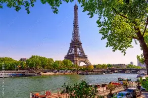
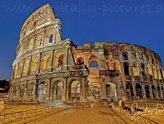
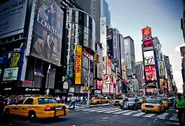

Die Stadt der Liebe begeistert mit dem Eiffelturm, Museen und leckerem Essen.
Erleben Sie Geschichte hautnah mit dem Kolosseum und dem Vatikan.


Die Stadt, die niemals schläft – perfekt für Shopping und Sightseeing.
Eine faszinierende Mischung aus Tradition und moderner Technik.